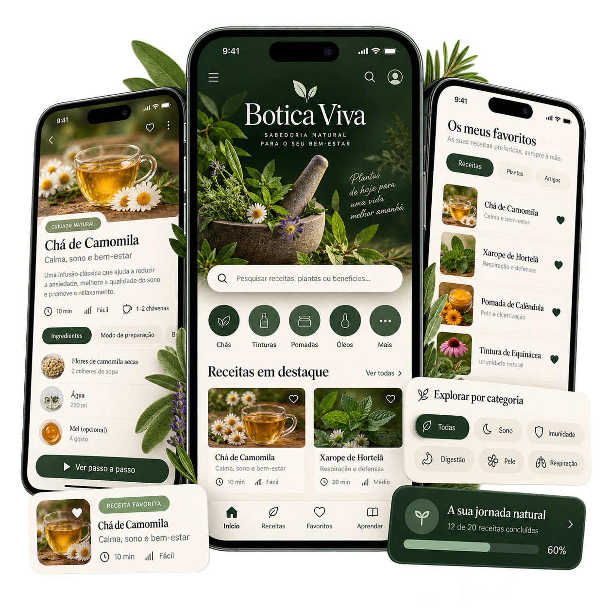

PLANO BÁSICO
Para quem quer começar
€7,90
- Aplicação Botica Viva com 38 fichas de plantas
- Preparação, modo de usar e cuidados
- Seis módulos, favoritos e fichas de registo
Descobre como identificar e preparar ervas do dia a dia com a Botica Viva: receitas organizadas, instruções passo a passo e cuidados de utilização, num só lugar.
Assinalaste pelo menos 1? O Botica Viva resolve isso em poucos dias.
E, muitas vezes, o que ouves é:
“Toma este medicamento.”
E assim os comprimidos acumulam-se em casa, sem nunca aprenderes a tratar a CAUSA.
Mas existe outro caminho: o caminho da cura natural, com ervas portuguesas poderosas que sempre estiveram perto de ti… só faltava saberes como usá-las.
E uma mulher determinada a registar tudo antes que desapareça.
A autora Dalva Fernandes cresceu a observar a sua família a usar plantas para tratar:
Mas foi só depois de viajar pela Índia e pelo Nepal, onde viu de perto como as famílias tratavam os seus problemas de saúde com ervas locais, que Dalva percebeu:
Portugal tem algumas das plantas medicinais mais poderosas do mundo… e nós estamos a deixar esse conhecimento morrer.
Durante anos, anotou:
Um registo vivo de um conhecimento ancestral, explicado de forma clara, segura e prática, para que qualquer pessoa o consiga usar.
Recebes acesso à aplicação online Botica Viva, com fichas de plantas, pesquisa, favoritos e registos. Podes utilizá-la no navegador do telemóvel, tablet ou computador, sem instalar. A compra não inclui o envio de um livro impresso.

Sem complicações. Compras, acedes e aplicas.
Escolhe o plano e, após a aprovação do pagamento, segue as instruções de acesso disponibilizadas na tua compra na Hotmart.
Encontra a planta pelo nome comum ou científico. Abre a ficha para consultar utilizações, preparação e cuidados.
Guarda favoritos e cria a tua ficha de preparação. Exporta uma cópia para conservar os teus registos fora deste navegador.
Vê um exemplo do que vais encontrar na aplicação. Escolhe um tema para explorar as plantas que aparecem nesse exemplo.
Plantas e ingredientes que aparecem neste exemplo:
Plantas e ingredientes que aparecem neste exemplo:
Plantas e ingredientes que aparecem neste exemplo:
Plantas e ingredientes que aparecem neste exemplo:
Plantas e ingredientes que aparecem neste exemplo:
Não precisas de decorar nada.Basta seguires o sistema.
Citação real da farmacêutica Brígida Moreira
“Tenho convicção de que Remédios de Ervas Portuguesas será fonte inicial de pesquisa e estudos…”Brígida Moreira — Farmacêutica
Estes comentários referem-se à obra de referência, não à aplicação Botica Viva. O produto vendido nesta página é o acesso à aplicação online; não inclui um livro impresso.
Do essencial ao mais completo, escolha o plano de acesso à aplicação ideal para si.
Para quem quer começar
€7,90
A experiência completa da Botica Viva
€14,90
Se não gostares da aplicação, basta pedires a devolução no prazo de 7 dias após receberes o acesso e fazemos o teu reembolso. Sem burocracia.
Encontre aqui respostas às dúvidas mais comuns sobre a Botica Viva e os planos disponíveis.